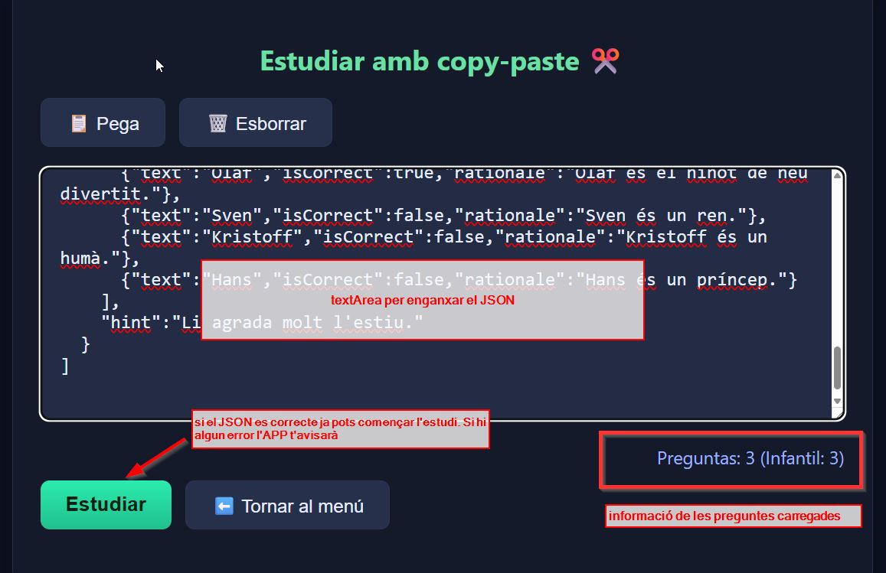

Aquí podràs aprendre com crear tests utilitzant ChatGPT, incloent exemples de prompts i recomanacions.
El prompt definit s'utilitza per generar automàticament un JSON amb una estructura específica, requerida per l'aplicació sTICdOPOS.
Aquest prompt és altament configurable i permet adaptar el contingut generat a diferents necessitats sense alterar l'estructura base del JSON. Per exemple, es pot demanar:
Independentment d'aquestes personalitzacions, el requisit fonamental és que el resultat respecti sempre l'estructura JSON esperada per l'aplicació, ja que això garanteix la seva correcta integració i funcionament dins de sTICdOPOS.
Aquí tienes un ejemplo de JSON correcto generado con ChatGPT listo para copiar y pegar en sTICdOPOS.
Un cop tens el JSON el pots engaxar directament en la APP per començar a estudiar.
El menu tens un opció que es (✂️ Estudiar amb CopyPaste).

Si vols que afegeixi el teu JSON a la APP passa-li al creador d'aquesta APP 😜
Accesos: